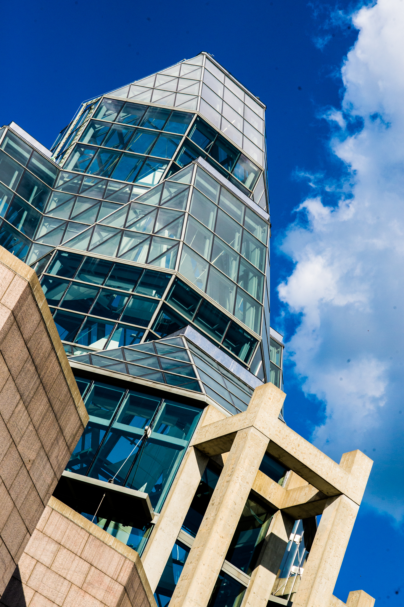
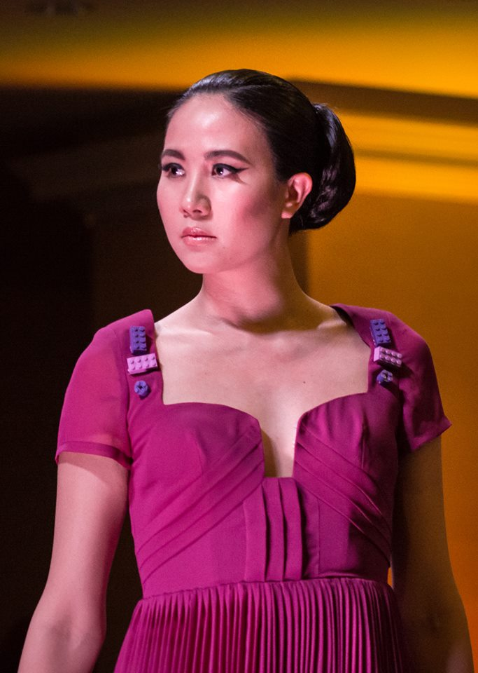
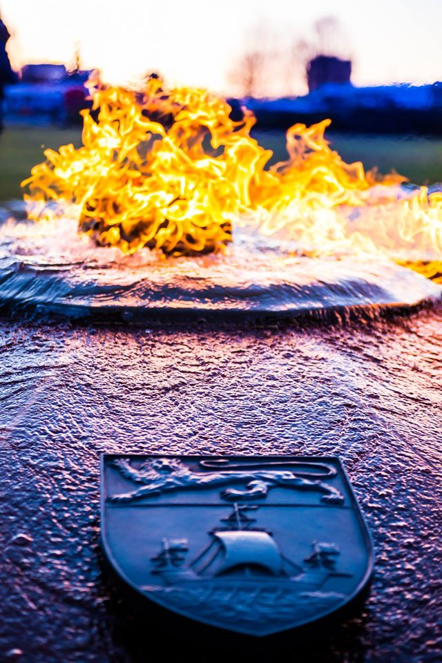

About Me
My Name is Lakyn Marie Felix, Heres a little about me im 31 years old, In my free time I love photography, I have been a photographer for the last 10 or so years. I have worked in many bars and done many events, shows, weddings ect. Including bluefest, glowfair and many more. Here are a couple photo's ive taken
  Through my love of photography and music, ive met so many amazing people and artists. Some of my favourite moments are meeting some of my favourite artist : Snails, Downlink, Figure as shown in the picture taken at riverside 2018
My Projects
I have created and made this website for my first challange Project, we had to refactor the current website for Horiseon, makeing sure all the links and css was optimized for the best use. Take a look here: Horiseon Project

My Contact Info
- My Email: lakynmphotography@hotmail.com
- Github: Lakyn Felix
- LinkedIn: LinkedIn
- Instagram: Instagram